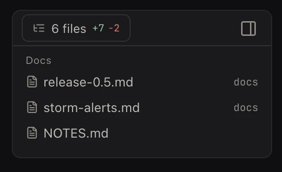
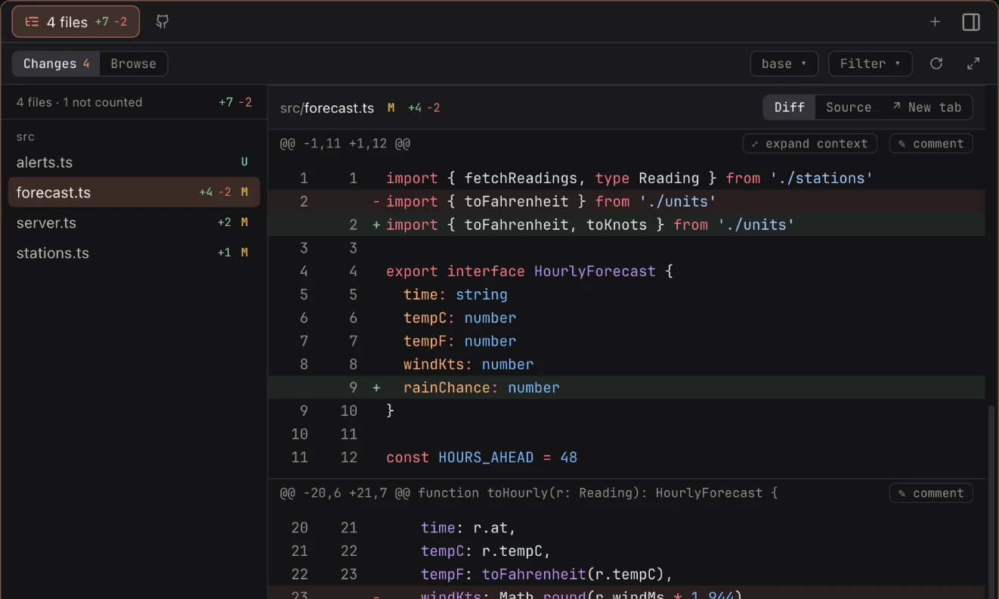
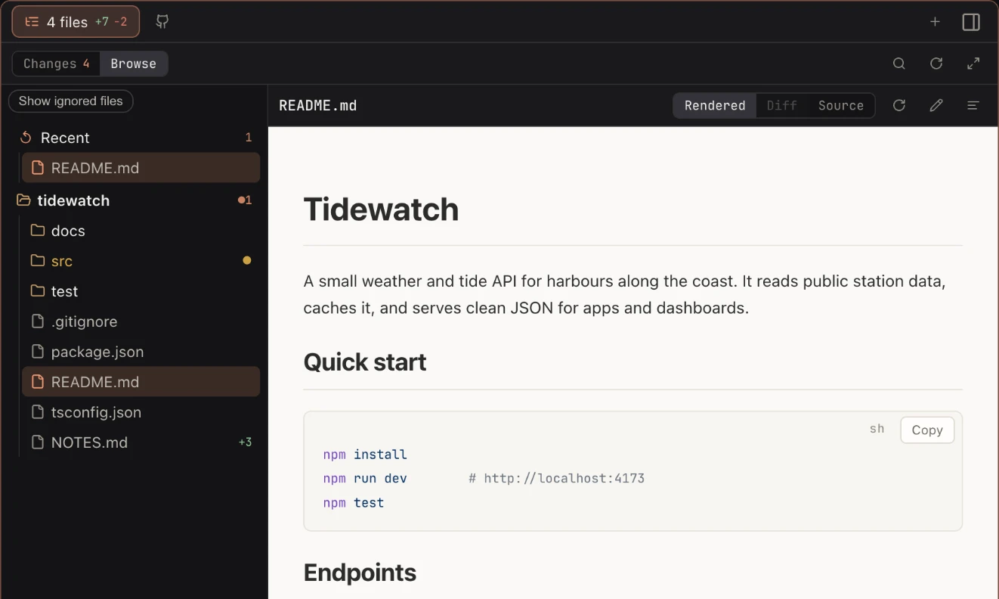
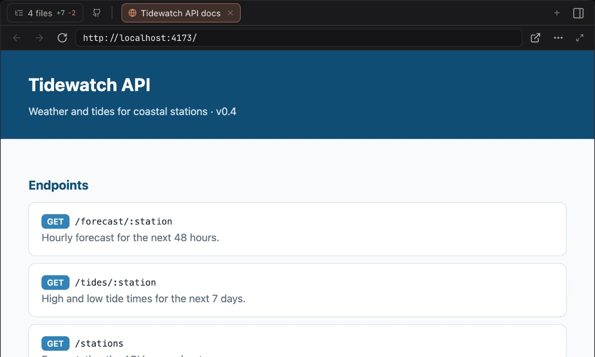
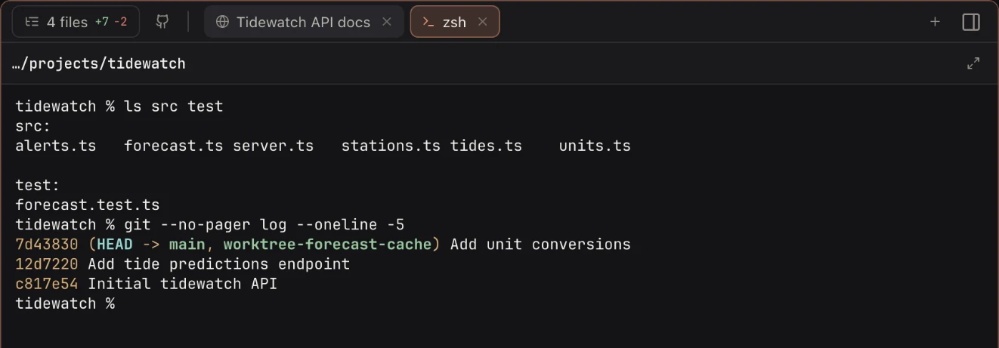
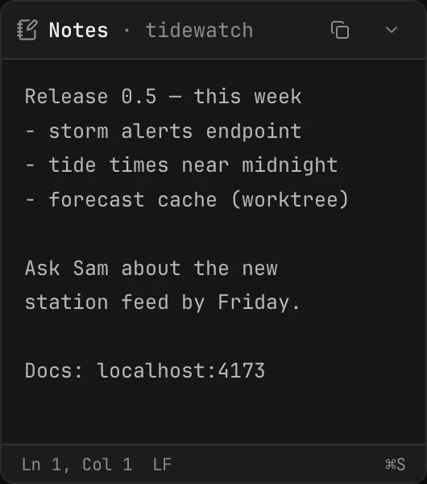

The Workbench
An agent edits files, starts a server, tells you to look at a page. In a plain terminal you open a second window for each of those, and lose track of which belongs to which chat. In Koloft every session tab has a Workbench beside it, and so does each folder. The agent's own terminal stays untouched next to it.
The Workbench does not jump around while the agent works. Nothing follows the agent's writes by itself. A file opens when you click it, or when the agent asks for it on purpose (see agents). ⌘⏎ makes the Workbench full width and back.
Folded down

⇧⌘B folds the Workbench down to a small card beside the terminal: how many files this session changed, and the Markdown or HTML files it wrote. Click the diff line to open Changes, a file to open it.
-
Files:
N fileswith the lines added and removed, orNo changes. When git has nothing to compare, as in a folder git does not track or one with no commit yet, justFiles. With the Workbench open, the Files tab at the top left reads the same. -
Docs: the Markdown and HTML files the agent wrote, or opened for you with
koloft open, newest first, plus the file you have open right now. The agent's own notes to itself, such asCLAUDE.md,AGENTS.mdand its skills, are left out. - Once a turn ends, Assist looks at it and keeps only the docs meant for you to read: a report, a plan, a write-up. A draft of text the agent posts somewhere else, like a pull request body, drops off the card a few seconds later. A doc the reply points you to is added, even if the agent did not write it. With Assist off, every doc the agent wrote stays listed.
- A Markdown file opens in Browse, shown the way it looks. An HTML file opens as a web tab.
- When the window is too narrow for the card and the terminal both, the card hides.
A Codex session gets the same card, and so does a session on a remote folder, Assist's pick included. On a remote folder the line count catches up at most every ten seconds, and an HTML file opens as a web page read from the machine.
Files ▸ Changes
The files this session touched, each with its diff right there. You read what the agent
did without typing git diff. The base switch picks what to
compare with: changes since the branch started, or only the ones not committed yet.
Each hunk (one block of changed lines) has ✎ comment in its header. Click it,
write a note, press ⏎: the file path, the hunk and your note land in the
session's input box, not sent. You read it over and press ⏎ there. The same in
a Codex session and on a remote folder. While the session waits for your OK on something,
or has ended, the button is greyed and says why.

Files ▸ Browse
The whole folder as a tree. A switch shows the files git ignores too. Some agents keep a
folder of their own outside your project. It shows here too, as Scratchpad,
on a remote machine as well. For Claude, it is its scratchpad (its folder for working
files). For Codex, it is the pictures the session made. For Antigravity, it is the
session's plans and its scratch folder. It shows once the session has put
something there. Muse keeps no such folder.

File tabs
- Markdown, images and PDF, shown the way they look. An HTML file opens as a web tab.
- the diff, or the plain source
-
a link in a file (
path:line, or a Markdown link to another file) opens that file in the same tab. If another tab already shows it, that tab comes forward at the line, and the tab you clicked in closes, unless it has unsaved edits - an editor: ⌘S saves. If the file changed on disk meanwhile, it will not quietly write over it. If the session ends while a file is not saved, a box asks at once: Keep for later, Discard or Save.
Web tabs
A real browser, not a preview. Logins stay, downloads work, popups open, and Chrome
extensions run. When the agent runs open <url>, the Workbench opens on
that page, and your cursor stays in the terminal. If the agent's session is not the one on
screen, you are not pulled over: the page waits in front when you click that row. A page
you open with ⌘-click lands in the background with an unread dot, and so does
one an agent opens while driving the browser (see agents).
Neither is loaded until you click it. Eight tabs per session; a ninth pushes out the one
you used longest ago.
Typing in the address bar suggests this project's pages first, the ones you visit most on
top (up to six). A file path typed there opens that file: an HTML file as a web page, any
other file the Workbench can show as a file tab. So does a file name from the session's
folder (its worktree, in a worktree session), like index.html or
src/app.ts. On a remote folder the file comes from
the machine, and an HTML file opens as a web page there too. Plain words run a search.

Point the agent at one part of a page
To the right of the address field is a button. Its tip reads
Pick an element and paste it into the session. Click it and move the mouse
over the page: the part under the mouse lights up. Click that part (the click does not
reach the page). Koloft puts this in the session's input box, without sending it:
- a first line,
Element picked in the Workbench browser - the page's address and title, and the frame's address if the part sits in a frame (a page inside the page)
- the part's name, like
button#buy.primary, its size and where it sits - the path of a picture of it (a PNG file), when Koloft can take one
- its HTML, cut after 4,000 characters, and its CSS as the page really drew it: size, margins, colours, font and the like
Add what you want done and press ⏎; your cursor is already back in the terminal. To stop picking without pasting anything, press Esc, click the button again, or click anywhere else in Koloft; picking also stops if the page goes to a new address. While the session waits for your OK, has ended, or the page is not showing, the button is greyed and its tip says why.
Every agent gets the same paste. On a remote folder, the picture
is copied to that machine, into ~/.koloft/element-picks, and the paste names
that path. Koloft deletes each picture after about a day. On a remote machine, it deletes
old pictures the next time it saves a new one there.
Terminal tabs
While the session is running, ⌃` opens a shell in its folder (up to eight). Run a test or check git there, and leave the agent's terminal to the agent.
-
A one-time question to an agent is fine there, such as
claude -p,codex exec,muse execoragy -p. In a folder on your Mac it runs on an account Koloft picks from Settings ▸ Accounts, the way a session does, never on the login this Mac already has. With no account it can use, it stops and says why. The first line says which account, likekoloft: → work · 5h 12% · 7d 40%. For Codex, Muse and Antigravity: if every account of that agent is at its limit (every Codex account, say), a second line says so, and it still runs on the one that resets first. If you added an API key account for that agent, it runs on the key instead, and the first line ends in(API key, metered). - In a remote folder the shell runs on the other machine, and those commands use that machine's own login.

The GitHub button
In a GitHub project a GitHub button sits next to Files. Click it to open the branch's pull request in a web tab, or the repo page when there is none yet. When the branch has a pull request, the button shows its number and a dot: green, its checks passed; amber, still running; red, one failed. Right-click it for more:
- Open repository
- Open pull requests
- Open pull request #… (when there is one)
- Checks · N failing of M (or passed, or running)
- Send failing checks (under Checks, when one fails) — puts each failing check's name, its link and the log around its first error into the session's input box, unsent, the same way as a hunk comment
- Commit… — a small box for your message; it commits every change not committed yet, new files too
- Push
- Open pull request… (when there is none yet) — pushes, then opens GitHub's compare page in a web tab
- Check again
The checks need gh (GitHub's command-line tool) signed in; without it the
line says Checks · install gh or Checks · run gh auth login. In
a folder picked for a git account, gh reads them
as that account instead. The same on a Codex session. On a
remote folder the commit and push run on the remote machine, and
gh runs on your Mac.
A folder's own Workbench
Each folder in the sessions list has a Workbench too, one that belongs to no session. Click the folder's own row: the folder's start page shows (the one with buttons to start a new session), and the Workbench button on the right (or ⇧⌘B) opens that folder's Workbench. It has Files of the folder, file tabs and web tabs, and no terminal. It stays closed until you open it, and its tabs come back when Koloft starts again.
In a GitHub project, a click on the open issues or open pull requests count (on the folder's row, or in its git panel) opens that list on GitHub in this Workbench. A session that was on screen keeps running; click its row to go back. Click the same count again and the same tab comes forward. On a remote folder it works the same, and the counts are greyed while the machine is not connected.
The note
One plain-text note per folder. Sessions come and go; the note stays. A
remote folder's note is kept on your Mac. Your
butler has a note of its own,
Notes · Alfred (with the name you gave it), shown while the butler or one of
its helpers is in front.

What it won't do
-
follow the agent's writes(a file opens when you or the agent ask) -
cover the agent's terminal(it sits beside it)
Next page → Agents can use Koloft too